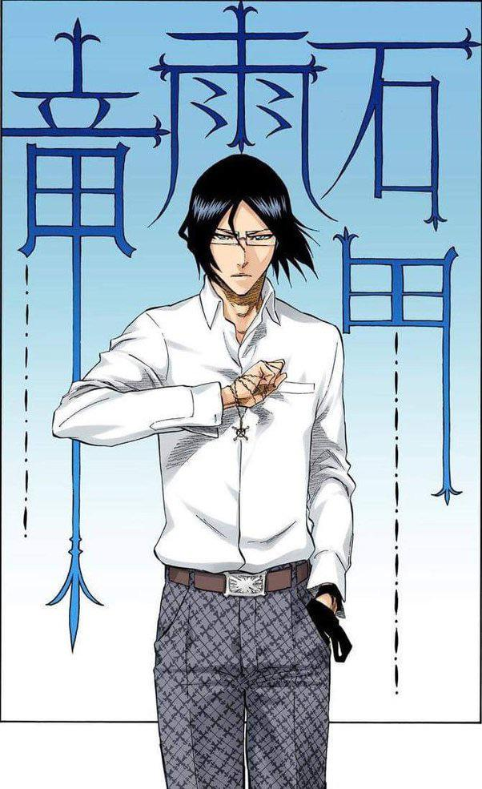

URYU
Uryū Ishida (石田 雨竜, Ishida Uryū) é um Gemischt Quincy residente na cidade de Karakura . Ele é médico no Hospital Karakura e amigo de Ichigo Kurosaki . Ele é um ex- Sternritter do Wandenreich com a designação A: Antítese, anteriormente um dos Schutzstaffel de Yhwach , e foi nomeado por Yhwach como seu futuro sucessor.
Uryū nasceu depois que Ryūken Ishida se casou com Kanae Katagiri , o que aconteceu após a infecção de Masaki Kurosaki , com quem a mãe de Ryūken originalmente pretendia que ele se casasse. Seis anos antes de fazer amizade com Ichigo Kurosaki , sua mãe perdeu a consciência no mesmo dia em que Masaki morreu, 17 de junho, e morreu três meses depois, quando Yhwach realizou sua técnica Auswählen e tomou seus poderes.
Quando criança, Uryū interagia e treinava principalmente com seu avô paterno, Sōken Ishida. Seu pai, Ryūken Ishida, não estava muito entusiasmado em ser um Quincy, alegando que não era uma ocupação lucrativa. Eles não parecem estar em bons termos como resultado, dado o uso casual do nome de seu pai por Uryū. Sōken entende o raciocínio de Ryūken, já que ser um Quincy é mais sobre justiça do que recompensas materiais, e Ryūken tem uma família para sustentar. Sōken disse a Uryū que um dia entenderia os motivos de seu pai, mas até agora esse não é o caso. Isso foi agravado quando Uryū assistiu Ryūken dissecar o corpo morto de Kanae, e ele implorou a seu pai para parar. Naquele dia, ele decidiu que nunca se tornaria um médico.
AMIGOS QUE FAZEMOS PELO CAMINHO


GOTEI 13